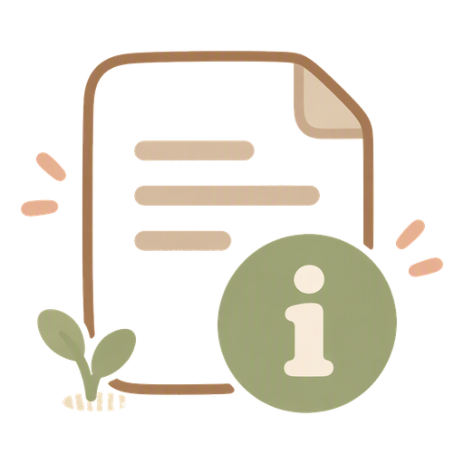

免責聲明
本網站旨在整理香港公開的精神健康與情緒支援求助資訊，方便公眾查閱。
資訊性質
- 本站內容僅供一般參考，並非醫療、法律或緊急服務建議。
- 不能取代合資格專業人員的評估、診斷或治療。
- 所列熱線與服務由第三方機構營運；服務時間、範圍與號碼可能變更，請以各機構最新公佈為準。
緊急情況
若你或他人正面對即時生命危險或不安全情況，請立即致電 999 或前往就近急症室，不要僅依賴本網站。
私隱與個案
- 本公開頁不載個案、新聞事故或任何可識別個人資料。
- 請勿透過本站提交敏感個人或個案資料；本站為靜態資訊頁，不設個案提交功能。
責任限制
在法律允許的最大範圍內，本站編輯者不就因使用或無法使用本站資訊而引致的任何損失承擔責任。 使用本站即表示你理解並接受以上條款。